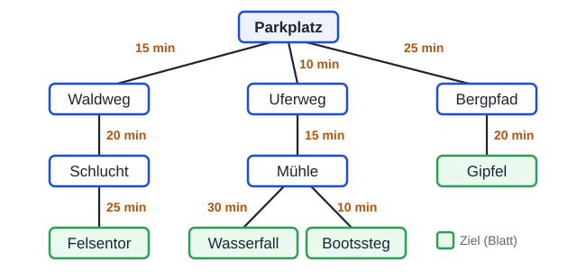

Vom Wanderparkplatz verzweigen sich die Wege: am Wald entlang, am Fluss entlang oder den Berg hinauf. Jeder Weg führt zu einem Ziel – einem Felsentor, einem Bootssteg, einem Gipfel. Du hast nur 40 Minuten. Welches Ziel schaffst du? Probierst du einen Weg aus und merkst unterwegs, dass die Zeit nicht reicht, gehst du zur letzten Abzweigung zurück und nimmst den nächsten Weg. Genau so arbeitet Backtracking.
Die Wege bilden einen Baum: Sie verzweigen sich nur und laufen nie wieder zusammen. Rekursion auf Bäumen kennst du aus 3.4 bis 3.6 – neu ist das Zurückgehen. Nebenbei lernst du, wie man einen allgemeinen Baum mit einer eigenen Klasse Baum verwaltet.
Im Video suchst du im Wegenetz eine Tour vom Parkplatz zu einem Ziel, die höchstens 40 Minuten dauert. An jedem Knoten steht, wie viele Minuten der Weg vom vorigen Punkt dorthin dauert. Achte darauf, woran die Suche eine Sackgasse erkennt und wohin sie dann zurückgeht.

Suche wie im Video eine Tour mit höchstens 30 Minuten. Die Wege werden von links nach rechts probiert. An welchen Punkten merkst du, dass die Zeit nicht reicht? Welches Ergebnis hat die Suche?
Waldweg (15) → Schlucht wäre 35 Minuten: zu weit, zurück. Uferweg (10) → Mühle (25) → Wasserfall wäre 55, Bootssteg 35: beides zu weit, zurück bis zum Parkplatz. Bergpfad (25) → Gipfel wäre 45: zu weit. Es gibt keine Tour mit höchstens 30 Minuten – die Suche hat alle Möglichkeiten ausgeschlossen.
In 3.4 hast du einen Baum nur aus Knoten-Objekten gebaut und Funktionen wie hoehe(knoten) von außen aufgerufen. Wie bei der verketteten Liste (Klassen Node und LinkedList) kann man den ganzen Baum aber auch in eine eigene Klasse packen: Die Klasse Baum hält die Wurzel in einem privaten Attribut, von außen benutzt man nur ihre Methoden. Achte im Video darauf, warum es zu jeder rekursiven Methode zwei Methoden gibt.
Jetzt du – mittippen: Lege 2_baeume/wanderwege.py an und tippe den Code aus dem Video ab: die Klassen Knoten und Baum und die Methoden hoehe und __hoehe. Starte mit F5 und probiere in der Kommandozeile aus: netz = Baum("Parkplatz") · netz.hoehe(). Danach committen, z. B. 3.6b Schritt 2: Knoten, Baum, hoehe angelegt.
Es gilt netz = Baum("Parkplatz"), sonst ist noch nichts eingefügt. Was liefert netz.hoehe()? Was passiert bei netz.__hoehe(netz.__wurzel) in der Kommandozeile – und warum ist das so gewollt?
netz.hoehe() liefert 0: Die Wurzel ist ein Blatt. Der zweite Aufruf endet mit einem AttributeError, denn Attribute und Methoden mit __ sind privat und von außen nicht erreichbar. So kann niemand von außen die Wurzel austauschen oder den Baum an der Klasse vorbei verändern – wer den Baum benutzt, braucht nur die öffentlichen Methoden.
Mit netz.einfuegen("Mühle", "Wasserfall", 30) soll der Wasserfall unter der Mühle eingehängt werden. Dazu muss die Methode den Knoten „Mühle“ erst finden. Die private Methode __finde sucht ihn im Baum: Sie fragt der Reihe nach die Teilbäume der Kinder. Findet ein Teilbaum nichts, meldet er None zurück, und das nächste Kind ist dran. Das ist schon Backtracking in seiner einfachsten Form. Achte im Video auf die Zeile, die einen Treffer nach oben durchreicht.
__finde – Treffer durchreichen oder None melden (ca. 2 min)Jetzt du – mittippen: Ergänze in 2_baeume/wanderwege.py den Code aus dem Video: die Methoden einfuegen und __finde. Starte mit F5 und probiere in der Kommandozeile aus: netz.einfuegen("Mühle", "Wasserfall", 30) · netz.einfuegen("Turm", "Aussicht", 5). Danach committen, z. B. 3.6b Schritt 3: einfuegen, __finde ergänzt.
Das ganze Wegenetz aus Abb. 1 ist eingefügt (10 Knoten). Was passiert bei netz.einfuegen("Turm", "Aussicht", 5)? Wie oft wird __finde dabei aufgerufen? Und wie oft bei netz.einfuegen("Uferweg", "Badestelle", 5)?
„Turm“ gibt es nicht: Jeder Teilbaum meldet None, am Ende auch die Wurzel. einfuegen gibt Turm gibt es nicht. aus und fügt nichts ein. __finde wird für jeden der 10 Knoten einmal aufgerufen. Beim Uferweg: Parkplatz, Waldweg, Schlucht, Felsentor (alles None), dann Uferweg – Treffer nach 5 Aufrufen. Mühle, Bergpfad und die übrigen Knoten werden gar nicht mehr angesehen.
Jetzt die Frage vom Anfang: netz.tour(40) soll eine Tour vom Parkplatz zu einem Ziel liefern, die höchstens 40 Minuten dauert. Die Liste weg merkt sich, wo man gerade ist. Vor jedem Schritt wird geprüft, ob die Zeit noch reicht. Ist das so, kommt der Punkt in den Weg (vorwärts). Führt keiner seiner Wege zum Ziel, wird er mit weg.pop() wieder herausgenommen (zurück). Achte im Video darauf, was in weg steht, wenn die Suche zurückgeht.
tour(40) Schritt für Schritt – weg.append und weg.pop (ca. 2 min)Jetzt du – mittippen: Ergänze in 2_baeume/wanderwege.py den Code aus dem Video: die Methoden tour und __tour. Starte mit F5 und probiere in der Kommandozeile aus: netz.tour(40). Danach committen, z. B. 3.6b Schritt 4: tour, __tour ergänzt.
Zum Nachlesen:
In __tour fehlt die Zeile weg.pop(). Was liefert netz.tour(40) jetzt? Ist die Ausgabe eine Tour, die man gehen kann?
['Parkplatz', 'Waldweg', 'Schlucht', 'Uferweg', 'Mühle', 'Bootssteg']. Die Suche selbst läuft genauso und findet den Bootssteg. Aber Waldweg und Schlucht bleiben nach der Sackgasse im Weg stehen. Diese „Tour“ kann man nicht gehen: Von der Schlucht führt kein Weg zum Uferweg. Erst die Rücknahme macht aus dem Inhalt von weg wieder den Weg von der Wurzel zum aktuellen Punkt.
Danach: Aufgabe 3.6b.1 – eine Tour von Hand verfolgen, Aufgabe 3.6b.2 – die Klasse Baum ausbauen und Aufgabe 3.6b.3 – alle Touren finden.
Hier lagen alle Möglichkeiten schon als Baum im Speicher. Bei vielen Problemen ist das nicht so: Beim Klausurplan, beim Sudoku oder beim N-Damen-Problem (Kursseite 3.10) entsteht der Baum der Möglichkeiten erst beim Suchen – jede Entscheidung („Mathe am Montag“, „eine 5 in dieses Feld“) ist ein Schritt nach unten. Das Muster bleibt dasselbe wie in __tour: prüfen, ob die Entscheidung erlaubt ist, setzen, rekursiv weiter, bei einer Sackgasse zurücknehmen.
Alltag: Wander- und Rad-Apps schlagen Touren vor, die in eine vorgegebene Zeit passen. Ein Sprachmenü am Telefon („Drücken Sie 1 für …“) ist ein Baum; wer eine Frage nicht beantwortet bekommt, geht ein Menü zurück und probiert die nächste Taste.
Beruf: Spielprogramme für Schach oder Vier gewinnt durchsuchen den Baum der möglichen Züge in der Tiefe und kehren zurück, sobald ein Zug sicher schlechter ist als ein schon gefundener. Auch Programme, die Fehler in Anlagen suchen („Wenn die Pumpe läuft, prüfe das Ventil …“), arbeiten Entscheidungsbäume mit Rückweg ab.
Backtracking ist eine systematische Suche: Man trifft eine Entscheidung und geht damit weiter (vorwärts). Erkennt man, dass es so nicht zum Ziel führt (Sackgasse), nimmt man die letzte Entscheidung zurück und probiert die nächste Möglichkeit (zurück). Im Baum ist das eine Tiefensuche, die bei einer Sackgasse zum Elternknoten zurückkehrt.
Verwaltungsklasse für einen Baum: Die Klasse Knoten speichert die Daten eines Knotens und die Liste seiner Kinder. Die Klasse Baum speichert die Wurzel privat (__wurzel). Eine rekursive Aufgabe teilt man auf: Die öffentliche Methode (z. B. hoehe()) braucht keinen Knoten als Parameter und ruft die private Hilfsmethode mit der Wurzel auf (__hoehe(self.__wurzel)). Die Hilfsmethode ruft sich für die Kinder selbst auf.
netz.tour(55) für das Wegenetz aus Abb. 1 in einer Tabelle wie in Beispiel 1 (Aufruf, Punkt, zeit, Aktion, weg). Markiere jede Rücknahme. Gib das Ergebnis und die Anzahl der Aufrufe an.netz.tour(55) jetzt liefert, und begründe, warum sich das Ergebnis ändert.limit an, bei dem tour den Gipfel liefert, obwohl die Wege wieder in der Reihenfolge aus Abb. 1 eingefügt sind – oder begründe, dass es keinen gibt.Datei: 2_baeume/wanderwege.py – weiterführen
Commits: nach Teil 1: 3.6b.2 Teil 1: anzahl_ziele ergänzt · nach Teil 2: 3.6b.2 Teil 2: ausgeben eingerückt · nach Teil 3: 3.6b.2 Teil 3: Tests ok
Ergänze die Klasse Baum nach dem Muster „öffentliche Methode ohne Knoten, private Hilfsmethode mit Knoten“.
anzahl_ziele() liefert die Anzahl der Blätter, also der Ziele im Wegenetz.ausgeben() gibt das Wegenetz eingerückt aus, je Ebene vier Leerzeichen mehr, mit den Minuten in Klammern, z. B.Parkplatz (0) Waldweg (15) Schlucht (20)anzahl_ziele keinen Parameter knoten hat, die Hilfsmethode aber schon.Die Hilfsmethode für ausgeben bekommt die aktuelle Tiefe als zweiten Parameter.